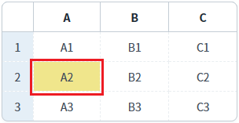

[GridView] 셀에 class 설정하기
1개요
GridView의 'setCellClass' 메소드를 사용하여, 특정 셀에 CSS class를 설정한 예제입니다.
2구현된 기능
GridView의 특정 셀에 class 설정하기
3예제 테스트 방법
3.1GridView의 특정 셀에 class 설정하기
1
STEP 1: 초기 상태 확인하기
GridView의 셀에 스타일이 설정되어 있지 않습니다.
Image 1.브라우저(Chrome) 실행 예시

2
STEP 2: 셀에 class를 설정합니다.
"두 번째 행의 'A' 컬럼의 셀에 'P00186_exam1' class 설정하기" 버튼을 클릭합니다.
3
STEP 3: 실행 결과를 확인합니다.
두 번째 행의 'A' 컬럼의 셀에 'P00186_exam1' class이 설정됩니다.
Image 2.브라우저(Chrome) 실행 예시

4구현 예시
1
STEP 1: 셀에 설정할 class를 정의합니다.
프로젝트에서 import하고 있는 CSS 파일에 아래와 같이 class를 정의합니다. 이 예제에서 사용할 class명은 'P00186_exam1'입니다. GridView의 setCellClass 메소드로 class를 설정하면 td에 추가됩니다. 기 선언된 공통 class의 selector 우선 순위에서 밀릴 수 있기 때문에 구체적으로 선언하는 것이 좋습니다. 이 예제에서는 GridView에 추가되는 class인 'w2grid'를 상위 class로 추가하였습니다.
Example 1.CSS
/* 다음의 경로에서 class를 확인할 수 있습니다. */ /* [프로젝트 경로]/WebContent/css/example.css */ /* P00186.xml 예제 */ .w2grid .P00186_exam1 {color: #fffaf0; background-color: #db7093;}
2
STEP 2: 스크립트를 작성합니다.
GridView의 'setCellClass' 메소드를 사용합니다.
Example 2.Script
//예제 파일의 스크립트 "scwin.btn_ex1_onclick"를 참고하세요. // GridView 'grd_exam1'의 두 번째 행의 'A' 컬럼의 셀에 'P00186_exam1' class를 설정합니다. grd_exam1.setCellClass(1, "col_a", "P00186_exam1");
5주요 API
setCellClass( rowIndex , colIndex , className )